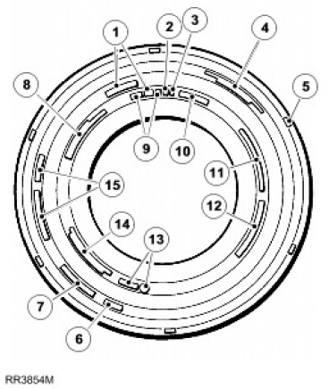
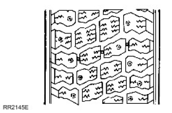
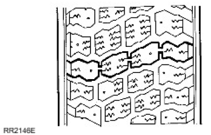
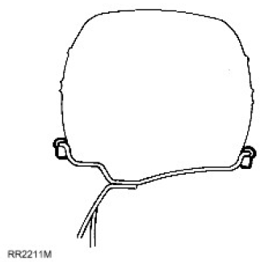
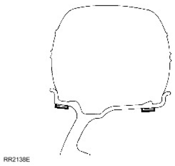
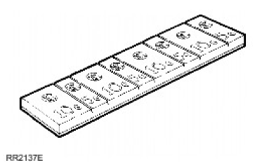
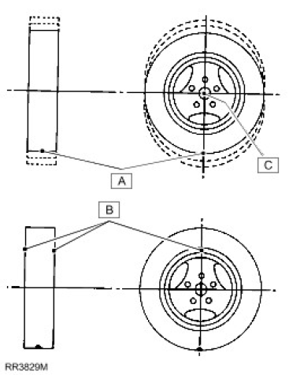
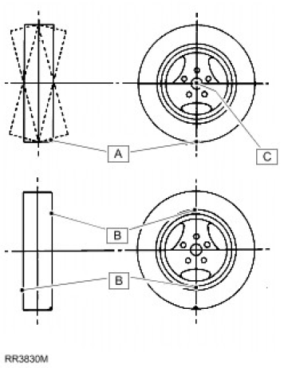
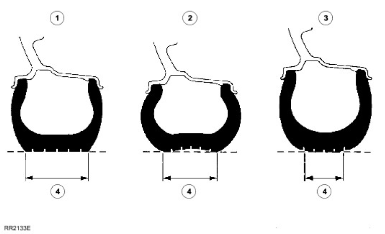

WARNING: Always use the same make and type of radial-ply tyres, front and rear. DO NOT use cross-ply tyres, or interchange tyres from front to rear.
WARNING: Always use the same make and type of radial-ply tyres, front and rear. DO NOT use cross-ply tyres, or interchange tyres from front to rear.
WARNING: Always use the same make and type of radial-ply tyres, front and rear. DO NOT use cross-ply tyres, or interchange tyres from front to rear.
WARNING: Always use the same make and type of radial-ply tyres, front and rear. DO NOT use cross-ply tyres, or interchange tyres from front to rear.
| Wheel type | Wheel size |
|---|---|
| Steel wheel - UK and Western Europe | 6F x 16 |
| Steel wheel - Other markets | 5.5F x 16 |
| Alloy wheel | 7J x 16 |
WARNING: Always use the same make and type of radial-ply tyres, front and rear. DO NOT use cross-ply tyres, or interchange tyres from front to rear. If the wheel is marked 'TUBED', an inner tube MUST be fitted, even with a tubeless tire. If the wheel is marked 'TUBELESS', an inner tube must NOT be fitted.
| Wheel type | Wheel size |
|---|---|
| Steel wheel - UK and Western Europe | 6F x 16 |
| Steel wheel - Other markets except Japan | 5.5F x 16 |
| Steel wheel - Japan | 6.5J x 16 |
| Alloy wheel | 7J x 16 |
| Model | Tire size |
|---|---|
| 90 | 205/80 R16 Radial |
| 265/75 R16 Radial (Multi terrain) | |
| 7.50 R16 Radial | |
| 110 - except Japan | 7.50 R16 Radial |
| 110 Japan | 7.50 R16C |
| 130 | 7.50 R16 radial |
| Model - Tire size | Front | Rear |
|---|---|---|
| 90 - 205/80 R16 | 1,9 bar | 2,6 bar |
| 28 lbf/in² | 38 lbf/in² | |
| 2,0 kgf/cm² | 2,7 kgf/cm² | |
| 90 - 265/75 R16 | 1,9 bar | 2,4 bar |
| 28 lbf/in² | 35 lbf/in² | |
| 2,0 kgf/cm² | 2,7 kgf/cm² | |
| 90 - 7.50 R16 | 1,9 bar | 2,6 bar |
| 28 lbf/in² | 38 lbf/in² | |
| 2,0 kgf/cm² | 2,7 kgf/cm² | |
| 110 - 7.50 R16 (except Japan) | 1,9 bar | 3,3 bar |
| 28 lbf/in² | 48 lbf/in² | |
| 2,0 kgf/cm² | 3,4 kgf/cm² | |
| 110 - 7.50 R16C (Japan) | 2,2 bar | 4,1 bar |
| 32 lbf/in² | 60 lbf/in² | |
| 2,3 kgf/cm² | 4,3 kgf/cm² | |
| 130 - 7.50 R16 | 3,0 bar | 4,5 bar |
| 44 lbf/in² | 65 lbf/in² | |
| 3,1 kgf/cm² | 4,6 kgf/cm² |
| Wheel type | Nm | lb-ft |
|---|---|---|
| *Steel wheels | 100 | 80 |
| Alloy wheels | 130 | 96 |
| Heavy duty wheels | 170 | 125 |
* Wheel nuts must be tightened by diagonal selection
Dependent on specification and model type, the vehicle is equipped with pressed steel or alloy wheel rims, both using tubeless radial ply tires.
The text, codes and numbers moulded into the tire wall vary between tire manufacturers, however most tires are marked with the information shown in the illustrated example.

| Item | Part Number | Description |
|---|---|---|
| 1. | Type of tire construction - Radial Ply | |
| 2. | Load index - 104 | |
| 3. | Speed symbol - S or T | |
| 4. | USA Tyre quality grading - Tread wear 160 Traction A temperature B | |
| 5. | Tread wear indicators moulded into tread pattern are located at intervals around the tire and marked by a code - E66 103S6 | |
| 6. | Tyres with 'Mud Snow' type tread pattern are marked - M and S | |
| 7. | Tyre reinforcing mark - Reinforced | |
| 8. | USA Load and pressure specification - (900Kg(1984LBS) at 340KA (50PSI) MACS PRESS | |
| 9. | Tyre size - 205 16 or 235/70 R16 | |
| 10. | Type of tire - TUBELESS | |
| 11. | Country of manufacture - MADE IN GREAT BRITAIN | |
| 12. | USA Compliance symbol and identification - DOT AB7C DOFF 267 | |
| 13. | European type approval identification - E11 01234 | |
| 14. | Tire construction - SIDE WALL 2 PLIES RAYON. TREAD 2 RAYON 2 STEEL | |
| 15. | Manufacturers brand name/type - TRACTION PLUS mzx M |
WARNING: This is a multi-purpose vehicle with wheels and tires designed for both on and off road usage. Only use wheels and tires specified for use on the vehicle.
The vehicle is equipped with tubeless 'S','T' or 'H' rated radial ply tires as standard equipment. The tires are of European metric size and must not be confused with the "P" size metric tires available in North America.
Vehicle wheel sets, including spare wheel, must be fitted with the same make and type of tire to the correct specification and tread pattern. Under no circumstances must cross-ply or bias-belted tires be used.
WARNING: DO NOT fit an inner tube to an alloy wheel.
For tire specification and pressures. For additional information, refer to (204-04 Wheels and Tires)
Tubeless tires are mounted on 5.5 or 6.5 inch wide by 16 inch diameter steel wheels.
Tubeless tires are mounted on 7.0 inch wide by 16 inch diameter cast aluminium alloy wheels. The surface has a paint finish covered with a clear polyurethane lacquer. Care must be taken when handling the wheel to avoid scratching or chipping the finish. The alloy wheel rim is of the asymmetric hump type incorporating a safety hump to improve location of the tire bead in its seat. If difficulty is experienced in fitting tires to this type of rim. See For additional information, refer to Wheel and Tire (204-04)
Inspect tires at weekly intervals to obtain maximum tire life and performance and to ensure compliance with legal requirements. Check for signs of incorrect inflation and uneven wear, which may indicate a need for balancing or front wheel alignment, if the tires have abnormal or uneven wear patterns. See Tire Wear Chart in this section.
Check tires at least weekly for cuts, abrasions, bulges and for objects embedded in the tread. More frequent inspections are recommended when the vehicle is regularly used in off road conditions.

To assist tire inspection, tread wear indicators are moulded into the bottom of the tread grooves, as shown in the illustration above.

When the tread has worn to a depth of 1.6 mm the indicators appear at the surface as bars which connect the tread pattern across the width of the tread as shown in the illustration above.
When the indicators appear in two or more adjacent grooves, at three locations around the tire, a new tire must be fitted.
Regularly check the condition of the wheels. Replace any wheel that is bent, cracked, dented or has excessive runout.
Check condition of inflation valve. Replace any valve that is worn, cracked, loose, or leaking air.
Maximum tire life and performance will be obtained only if tires are maintained at the correct pressures.
Tyre pressures must be checked at least once a week and preferably daily, if the vehicle is used off road.
The tire inflation pressure is calculated to give the vehicle satisfactory ride and steering characteristics without compromising tire tread life. For recommended tire pressures in all conditions. For additional information, refer to (204-04 Wheels and Tires)
Always check tire inflation pressures using an accurate gauge and inflate tires to the recommended pressures only.
Check and adjust tire pressures ONLY when the tires are cold, vehicle parked for three hours or more, or driven for less than 3.2 km (2 miles) at speeds below 64 km/h (40 mph). Do not reduce inflation pressures if the tires are hot or the vehicle has been driven for more than 3.2 km (2 miles) at speeds over 64 km/h (40 mph), as pressures can increase by 0.41 bars (6 lb/in²) over cold inflation pressures.
Check ALL tire pressures including the spare. Refit the valve caps as they form a positive seal and keep dust out of the valve.
 CAUTION: It is essential that all wheel balancing is carried out off the vehicle. The use of on the vehicle balancing could cause component damage or personal injury and MUST NOT be attempted.
CAUTION: It is essential that all wheel balancing is carried out off the vehicle. The use of on the vehicle balancing could cause component damage or personal injury and MUST NOT be attempted.
Remove stones from the tire tread in order to avoid operator injury during dynamic balancing and to obtain the correct balance.
Inspect tires for damage and correct tire pressures and balance according to the equipment manufacturer's instructions.

Clean area of wheel rim and attach balance weights in position shown.

Clean area of wheel rim and attach adhesive balance weights in position shown. Cut through rear face of weight strip to detach required weights.
CAUTION: Use only correct adhesive balance weights to avoid damage to aluminium wheel rim. DO NOT attempt to use a steel wheel weight on an aluminium wheel.


| Item | Part Number | Description |
|---|---|---|
| A | Heavy spot. | |
| B | Add balance weights here. | |
| C | Centre line of spindle. |
Static balance is the equal distribution of weight around the wheel. A statically unbalanced wheel will cause a bouncing action called wheel tramp. This condition will eventually cause uneven tire wear.

| Item | Part Number | Description |
|---|---|---|
| A | Heavy spot. | |
| B | Add balance weights here. | |
| C | Centre line of spindle. |
Dynamic balance is the equal distribution of weight on each side of the centre line so that when the wheel spins there is no tendency for side to side movement. A dynamically unbalanced wheel will cause wheel shimmy.
Balance wheel assembly referring to equipment manufacturer's instructions.
It is essential that the wheel is located by the centre hole NOT the stud holes. To ensure positive wheel location the diameter of the locating collar on the machine shaft must be 112,80 to 112,85 mm (4.441 to 4.443 in). This diameter will ensure that the collar fits correctly within the centre hole of the wheel.
Where possible, always use the vehicle wheel retaining nuts to locate the wheel on the balancer, to avoid damaging the wheel. If this is not possible, the locating nuts must be of a similar pattern to the original wheel nuts. The use of conical type wheel nuts for this purpose may damage the surface on alloy wheels.
Wash the aluminium wheels using a suitable wash and wax concentrate, correctly diluted and rinse with cold clear water. DO NOT use abrasives or aluminium wheel cleaners containing acid, as they will destroy the lacquer finish.
Use only tire changing equipment to mount or demount tires, following the equipment manufacturer's instructions. DO NOT use hand tools or tire levers, as they may damage tire beads or the wheel rim.
Remove punctured tire from wheel and repair using a combination service plug and vulcanising patch. Always follow manufacturer's instructions when using a puncture repair kit.
Only punctures in tread area are reparable, DO NOT attempt to repair punctures in tire shoulders or sidewalls.
Do not attempt to repair a tire that has sustained the following: bulges or blisters, ply separation, broken or cracked beads, wear indicators visible and punctures larger than 6 mm diameter.
CAUTION: Do not use tire sealants that are injected through valve stem to repair punctured tires, they may produce wheel corrosion and tire imbalance.
Aluminium wheel rim bead seats should be cleaned using a non-abrasive cleaner to remove the mounting lubricants and old rubber. Before mounting or demounting a tire, bead area should be well lubricated with a suitable tire lubricant.

| Item | Part Number | Description |
|---|---|---|
| 1. | Correct inflation. | |
| 2. | Under-inflation. | |
| 3. | Over-inflation. | |
| 4. | Tread contact with road. |
CAUTION: This chart is for general guidance only and does not necessarily include every cause of abnormal tire wear.
| Fault | Cause | Remedy |
|---|---|---|
| Rapid wear at shoulders | Tires under inflated | Inflate to correct pressure |
| Worn suspension components; i.e. ball joints, Panhard rod bushes, steering damper | Replace worn components | |
| Rapid wear at centre of tread | Tires over inflated | Inflate to correct pressure |
| Wear at one shoulder | Track out of adjustment | Adjust track to correct figure |
| Bent Panhard rod | Check and replace worn or damaged components | |
| Bald spots or tire cupping | Wheel out of balance | Balance wheel and tire assembly |
| Excessive radial run out | Check run out and replace tire if necessary | |
| Shock absorber worn | Replace shock absorber | |
| Excessive braking | ||
| Tire scalloped | Track out of adjustment | Adjust track to correct figure |
| Worn suspension components | Check and replace worn or damaged components, and replace tire | |
| Excessive cornering speeds |